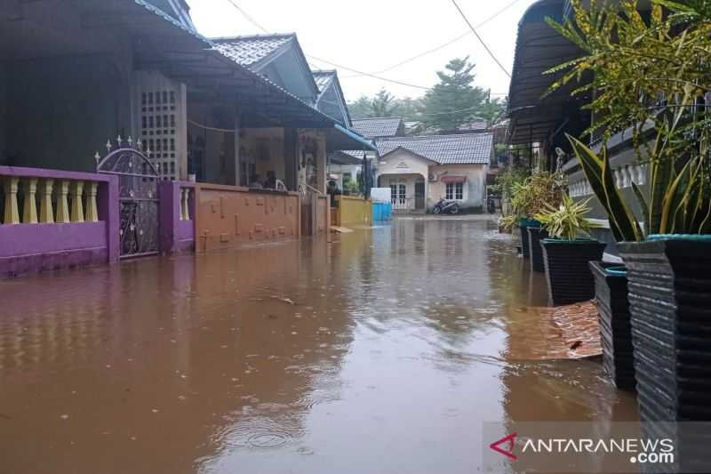
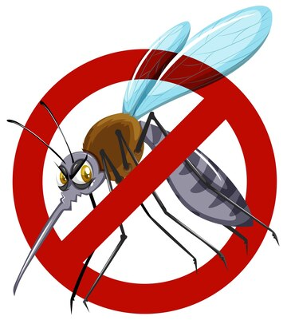
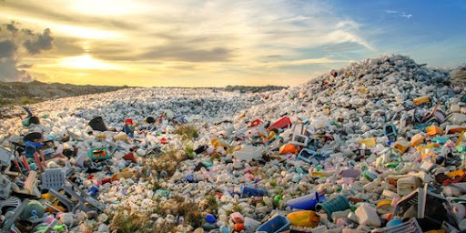
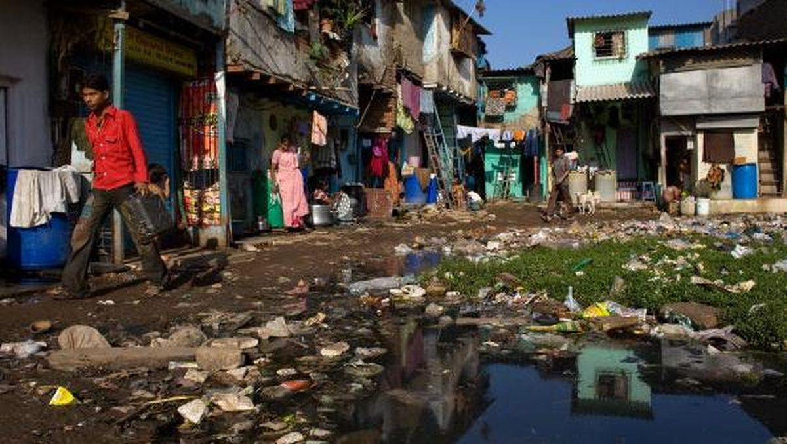
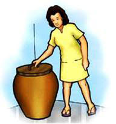
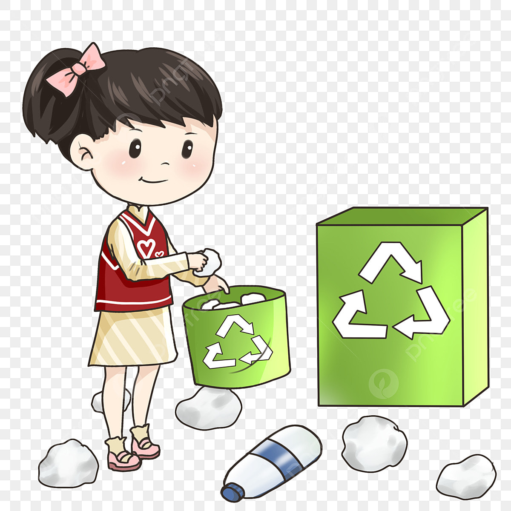

Air tergenang
Tempat nyamuk berkembang biak.
EDUKASI KESEHATAN
Kenali gejala, penyebab, dan cara pencegahan demam berdarah dengue agar keluarga dan lingkungan tetap sehat.

01 - GEJALA
Demam berdarah dapat menyerang siapa saja. Perhatikan beberapa gejala berikut dan jangan menunda pemeriksaan jika kondisi memburuk.
02 - PENYEBAB
Nyamuk Aedes aegypti berkembang biak pada air yang tergenang dan lingkungan yang kurang terawat.

Tempat nyamuk berkembang biak.

Wadah bekas dapat menampung air hujan.
Menambah genangan di sekitar rumah.

Mendukung perkembangbiakan nyamuk.
03 - DAMPAK
DBD yang tidak ditangani dengan tepat dapat menyebabkan komplikasi serius.
04 - PENCEGAHAN
Langkah sederhana yang dilakukan rutin dapat membantu memutus siklus hidup nyamuk.
Bersihkan tempat penampungan air secara rutin.
Tutup rapat tempat penyimpanan air.

Manfaatkan atau buang barang bekas dengan benar.

TIM PENGEMBANG
LOKASI KAMPUS